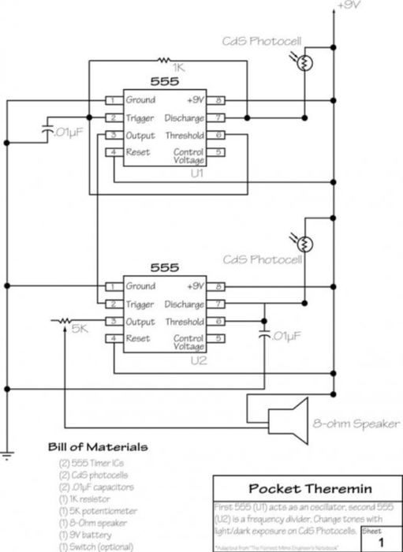

I’ve been playing around with 555 timers a lot recently and decided to make myself a light Theremin.
After some searching I found one which uses 2 photo cells and is kinda similar to an Atari punk console but without the pots.
I came up with the idea of adding the Theremin inside a resin skull!
I had the mould of the skull lying around from another project and have been wanting to use it again for some time.
The photo cells sit inside the skull and to play the Theremin you wave your hands around the skull to change the light hitting the photo cells which in turn changes the pitch of the Theremin.
I have included a step by step walkthrough of building the circuit for anyone new to electronics. It’s pretty straight forward though for anyone who has played around with circuits before.
Check out the video to see it in action.
STEP 1Step 1: Parts and Tools
Parts:
Circuit
2 X Photo Cells – eBay
1 X 5K Pot – eBay
2 X 555 Timers – eBay
.01 Capacitor has “104” on it – eBay
1k Resistor – eBay
8 Ohm Speaker – eBay
9v Battery Holder – eBay
9v battery
Switch – eBay
Perf board – eBay
wire
Flickering LED – eBay (Optional. I decided to add an LED so it could be used as a lamp as well)
Resin Skull
Resin – eBay
Skull Mould – Etsy
Copper wire – eBay
Box for the skull to be mounted on and electronics to be stored in – up to you want you use.
Tools
Mixing cups for the resin
Soldering iron and solder
Pliers
Wire cutters
Drill
Ply wood (used to hold the mould in place)
Jigsaw
STEP 2Step 2: Making the Circuit - Adding the 555 Timers

The first thing to do is to add the 555 timers to the perf board
Steps:
Place the timers into the perf board making sure that they are close together as shown below. Also make sure that the little notch on the side is on the left hand side. This will orientate the 555 time correctly.
Solder all of the legs to the perf board
STEP 3Step 3: Making the Circuit - Pins 1, 2 and 6 on the First 555 Timer
The little legs on the 555 timers I will be calling pins and I will start with the 555 timer furthest of the left of the perf board.
The perf board that I used has a section for all of the negative and positive connections to be soldered to.
I find that this type of board is best to use in these projects
Steps:
Solder a wire to pin 1 and ground
Solder the 1k resistor to pins 2 and 7
Solder the 0.1 capacitor to pin 2 and ground
Lastly, solder a wire from pin 2 to 6. I usually do this underneath as shown in the below images with a leg from a resistor.
STEP 4Step 4: Making the Circuit - Pins 3 and 4 on the First 555 Timer
Steps:
Solder a wire to pin 3 on the first 555 timer to pin 2 on the 2nd 555 timer
Solder a wire from pin 4 to positive
STEP 5Step 5: Making the Circuit - Pins 6 and 8 on the First 555 Timer
To be able to connect the photo cells inside the resin skull, you will need to add 2 wires to the first 555 timer and 2 to the other one. I will do this a bit later
Steps:
Solder pin 8 to positive section on the circuit board
That’s all of the wiring for the first 555 timer. It’s now time to move onto the next one
STEP 6Step 6: Making the Circuit - Pins 1 and 3 on the Second 555 Timer
Steps:
Solder a wire to pin 1 and ground
Solder a long wire to pin 3. This will be attached to the 5K potentiometer. To connect a pot, you need to solder the end of the wire to the first 2 solder points on the pot.
We will solder the end of the wire from pin 3 to the potentiometer a little later on
STEP 7Step 7: Making the Circuit - Pins 4, 6 and 7 on the Second 555 Timer
Steps:
Solder a wire to pin 4 to positive
Solder the other 0.1 capacitor to pin 6 and ground. You will have to add a wire in order for the legs of the capacitor to reach both points as shown below.
Turn the board over and add some solder to legs 6 and 7 so they connect
Add a long wire to pin 7 on BOTH the 555 timers. these will connect to the Photo cells. You will also need to add a couple of wires to the positive section which is in the next step
STEP 8Step 8: Making the Circuit - Pin 8, 6 and Speaker Connection Second 555 Timer and Testing
Steps:
Solder a wire to pin 8 to the positive section
Solder 3 long wires to the positive section. 2 will be used for the photo cells and the other to the positive end of the speaker.
Lastly solder 2 long wires to both the ground and positive sections on the perf board. These will be used to power the circuit
That’s all of the wiring done. Now it’s time to test. Connect a 9v battery to the circuit via the wires added for power.
Next, either solder the photo cells to the ends of the wires or used a bread board to make the connections.
Add power and test to make sure that when you cover either photo cell you get different tones from the circuit. If one doesn’t do anything, check your connections and test again.
STEP 9Step 9: Resin Skull - Preparing the Mould
Steps:
On a piece of ply board, trace around the base of the mould
Next, make the trace outline you just did smaller by about 15mm. This is so the mould will sit inside the ply wood
Drill a hole in the inside of the circle so you can use a jigsaw to cut out the section marked
Cut out the area and place the skull mould inside to make sure it fits correctly.
Lastly, secure the ply wood so it is raised and also even.
STEP 10Step 10: Resin Skull - Adding the Photo Cells
In order to be able to add the photo cells to the inside of the skull, you will need to first solder them to some copper wire
Steps:
Cut 4 lengths of copper wire. They will need to be about 150mm each in length
Slight bend the ends of each of the wire so when you attach the photo cells, they will face outwards inside the skull
Trim the legs on the photo cells and solder onto the ends of the copper wire. Do this for both
STEP 11Step 11: Resin Skull - Adding the Photo Cells
Next thing to do is to work out a way to hold the photo cells into place whist the resin sets hard
Steps:
Find a small piece of wood that is about 15mm wide and long enough to sit on top of the skull mould
Place one of the photo cells against the wood and tape into place
Go and check that the photo cell sits where you want it to in the skull and is not touching the sides of the mould.
Do the same for the other photo cell
Place onto the mould in preparation for the resin to be poured
STEP 12Step 12: Mixing and Pouring the Resin
Your skull mould is ready to pour the resin
Steps:
Carefully mix the resin as per the instructions. Make sure you take your time when stirring so you don’t introduce any large bubbles.
Once thoroughly mixed, carefully pour the resin into the skull mould.
As resin does shrink once it is cured, it’s best to slightly overfill the mould
Leave to dry for 24 hours. If you are like me you will be tempted to start poking around earlier but it really is best to let the resin totally cure before trying to remove it from the mould
STEP 13Step 13: Polishing the Skull
When you pull the skull out of the resin it will probablycome out dull looking. Now it’s time to start polishing
STEP 14Step 14: Speaker, Switch and Volume Knob
You could make a box for the skull and electronics if you wanted to. I went down the path of least resistance and used a wooden box I had lying around.
Steps:
Decide where you want to add the speaker onto the box. Mark and cut out the hole using a hole saw drill bit.
Next secure the speaker into the hole of the box with some screws
Drill a couple of small holes, one for the 5K pot and the other for the on/off switch. Attach these parts to the box.
STEP 15Step 15: Add the Crystal Skull
You don’t actually secure the skull to the box in this part, you just make the holes in the box for the copper wires inside the skull to go through.
Steps:
Mark on the box where you need to drill for the copper rod to go into. You will need to drill 4 holes for each of the wires
Drill the holes and make sure that the copper rods in the skull fit into the holes correctly and that the skull sits nice and flat.
STEP 16Step 16: Wiring the Switch and Battery
The switch is a 3 way switch.
This means that whist in the middle everything is off.
If you move it up or down then you either turn on the Theremin or LED.
First I will wire-up the Circuit board for the Theremin.
Steps:
Solder a positive wire from the circuit board to one of the solder points on the switch. It would be on one of the ends
Next, solder the positive wire from the battery holder to the middle solder point on the switch.
Solder the negative wire from the battery to the negative section on the circuit board
STEP 17Step 17: Wiring the Photo Cells
Now it’s time to wire the photo cells to the circuit board.
Steps:
Place the skull back onto the top of the case and push the copper wires through
Wire one of the positive wires from the circuit board to the first copper wire in the skull
Next, solder the wire from pin 7 on the first 555 timer to the other copper wire
Do the same thing for the other photo cell.
To keep the skull in place, bend the copper wires over as shown below.
STEP 18Step 18: Adding the Volume Knob and Speaker
Steps:
Solder the wire from pin 3 on the 2nd 555 timer to the potentiometer. When you solder this wire, you need to solder it to the first 2 solder points on the pot.
Next, solder a wire from the last solder point on the pot to the negative solder point on the speaker
Lastly, solder one of the wires that you soldered to the positive section on the circuit board to the positive solder point on the speaker
At this stage you can test the Theremin and make sure that everything is working.
You should be able to change the pitch and tone of the 555 by waving your hands in front of the photo cells.
If nothing happens try turning the volume switch to full.
If nothing happens still, you may have to go over the circuit board to make sure you have wired everything up correctly.
STEP 19Step 19: Adding the LED
Nearly there!
Steps:
Drill a small hole into the lid of the case under the skull. Needs to be big enough to fit a 3mm LED
Solder a 40K resistor (or whatever you have that is close) to the negative leg of the LED.
Solder a wire to the end of the resistor and to the positive leg on the LED.
Add some heat shrink to each of the legs.
Super glue into place
Attach the positive wire to the other solder point on the switch (the opposite to the one that the Theremin circuit is attached to)
Solder the negative wire to the negative solder point on the circuit board
Test to make sure the LED come on
DONE!
STEP 20Step 20: Done
Now that you have finished, it’s time to play with your Theremin.
I find that it works best not in direct sunlight or really bright lights, this could be different however for your build.
Playing your light Theremin is pretty simple, you just wave your hands in front of the photo cells to change the pitch and tones.
After a while you start to work out how to make different sound effects by moving your hands slightly to change pitch.
I have managed to get some interesting sounds out of the light Theremin but you definitely wouldn’t use it to entertain your friends unless you want to un-friend them!
Some of the tones generated are pretty harsh to anyone within earshot.